전기공사산업기사 (2004-03-07 기출문제)
1과목: 전기응용
1. 다음 소자중 온도를 전압으로 변환시키는 장치는?
- 열전대
- 벨로우즈
- 전자석
- 관전 다이오드
(정답률: 79%)

2. 곡선도로 조명상 조명기구의 배치 조건이 가장 적당한 사항은?
- 양측배치의 경우는 지그재그식으로 한다
- 한쪽만 배치하는 경우는 커브 바깥쪽에 배치한다
- 직선도로에서 보다 등간격을 조금 더 넓게 한다
- 곡선도로의 곡률반경이 클수록 등간격을 짧게 한다
(정답률: 84%)
3. 100[V], 500[W]의 전열기를 90[V]에서 사용할 때의 전력[W]은?
- 350
- 4⑤
- 425
- 450
(정답률: 66%)
4. 전기화학에서 양이온이 되는 것은?
- H2
- SO4
- NO3
- OH
(정답률: 75%)
5. 반 간접 조명의 설계에서 등의 높이란?
- 피조면에서 등(燈)까지의 높이
- 바닥면에서 등(燈)까지의 높이
- 피조면에서 천장까지의 높이
- 바닥면에서 천장까지의 높이
(정답률: 64%)
6. 휘도가 낮고 효율이 좋으며 투과성이 양호하여 터널조명, 도로조명, 광장조명등에 주로 사용되는 것은?
- 백열전구
- 형광등
- 나트륨등
- 할로겐등
(정답률: 82%)
7. 서로 다른 두 개의 금속이나 반도체를 접속하여 전류를 인가하면 접합부에서 열이 발생하거나 흡수되는 현상은?
- 제벡 효과
- 펠티어 효과
- 톰슨 효과
- 핀치 효과
(정답률: 72%)
8. 전동기를 발전기로 작용시켜서 그 출력을 저항으로 소모시키는 제동법은?
- 발전 제동
- 회생 제동
- 역상 제동
- 와류 제동
(정답률: 62%)
9. 르클랑세 전지의 전해액은?
- H2S04
- CuSO4
- NH4Cl
- ZnO
(정답률: 66%)
10. 휘도가 L[cd/m2]인 무한히 넓은 완전확산성 천장이 있다. 천장직하 h[m]의 거리에 있는 바닥면의 수평조도[lx]는?
- L/π
- L/π2
- πL
- π2L
(정답률: 60%)
11. 전동차의 무게가 100[t]이고, 바퀴 위의 무게가 75[t]인 기관차의 최대 견인력은 몇 [Kg]인가? (단, 바퀴와 레일의 점착 계수는 0.2이다)
- 5000
- 10000
- 15000
- 20000
(정답률: 72%)
12. 열에 의한 물질의 상태변화에 대한 설명 중 틀린 것은?
- 고체를 가열하면 용융되어 액체로 된다. 이것을 융해라한다.
- 액체를 냉각시키면 고체로 된다. 이것을 응고라한다.
- 액체에 열을 가하면 기체로 된다. 이것을 기화라한다.
- 기체를 냉각시키면 액체로 된다. 이것을 승화라한다.
(정답률: 81%)
13. 방전등의 전압-전류특성은 부 특성이므로 일정전압을 인가하면 전류가 급속히 증가하여 방전등이 파괴되는 것을 방지하는 장치는?
- 발광관
- 콘덴서
- 점등관
- 안정기
(정답률: 67%)
14. 기동 토크가 큰 특성을 가지는 전동기는?
- 직류 분권 전동기
- 직류 직권 전동기
- 3상 농형 유도 전동기
- 3상 동기 전동기
(정답률: 81%)
15. 다이액(DIAC) 설명중 잘못된 것은?
- NPN 3층으로 되어 있다.
- 역저지4극 다이리스터로 되어 있다.
- 쌍방향으로 대칭적인 부성저항을 나타낸다.
- 다이액의 항복전압을 넘을 때 갑자기 콘덴서가 방전하고 그 방전전류에 의하여 트라이액을 ON 시킬수가 있다.
(정답률: 73%)
16. 최고 사용온도가 1100[℃]이고 고온강도가 크고 냉간가공이 용이하며 고온용 발열체에 적합한 것은?
- 니크롬 제2종
- 니크롬 제1종
- 철크롬 제2종
- 철크롬 제1종
(정답률: 67%)
17. 15[℃]의 물 4ℓ 를 용기에 넣고 1[kw]의 전열기로 90[℃]로 가열하는데 30분이 소요되었다. 이 장치의 효율[%]은? (단, 증발이 없는 경우 q=0이다.)
- 70
- 50
- 40
- 30
(정답률: 70%)
18. 피드벡 제어계중 물체의 위치, 방위, 자세등의 기계적 변위를 제어량으로 하는 것은?
- 서보기구(servo mechanism)
- 프로세스제어(process control)
- 자동조정(automatic regulation)
- 프로그램 제어(program control)
(정답률: 77%)
19. 직선인 선로에서 호륜궤조를 설치하지 않으면 안 되는 곳은?
- 분기개소
- 저속도 운전 구간
- 병용 궤도
- 교량의 전방
(정답률: 57%)
20. 다음 중 고압 아크로가 아닌 것은?
- 에르식 제강로
- 쉔헤르로
- 파우링로
- 비르게란드 아이데로
(정답률: 68%)
2과목: 전력공학
21. 그림과 같이 수전단 전압 3.3kV, 역률 0.85(뒤짐)인 부하 300kW에 공급하는 선로가 있다. 이 때 송전단 전압은 약 몇 V 인가?
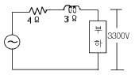
- 2930
- 3230
- 3530
- 3830
(정답률: 26%)
22. 연간 최대수용전력이 70kW, 75kW, 85kW, 100kW인 4개의 수용가를 합성한 연간 최대수용전력이 250kW이다.이 수용가의 부등률은 얼마인가?
- 1.11
- 1.32
- 1.38
- 1.43
(정답률: 37%)
23. 수전단 전압이 송전단 전압보다 높아지는 현상을 무엇 이라 하는가?
- 페란티 효과
- 표피효과
- 근접효과
- 도플러 효과
(정답률: 41%)
24. 전력용콘덴서에서 방전코일의 역할은?
- 잔류전하의 방전
- 고조파의 억제
- 역률의 개선
- 콘덴서의 수명 연장
(정답률: 38%)
25. 가공지선에 대한 설명 중 옳지 않은 것은?
- 직격뢰에 대해서는 특히 유효하며 탑 상부에 시설하므로 뇌는 주로 가공지선에 내습한다.
- 가공지선 때문에 송전선로의 대지용량이 감소하므로 대지와의 사이에 방전할 때 유도전압이 특히 커서 차폐효과가 좋다.
- 송전선 지락시 지락전류의 일부가 가공지선에 흘러 차폐작용을 하므로 전자유도장해를 적게 할 수도 있다.
- 가공지선은 아연도 철선, ACSR 등을 사용하며 보통 300m, 때로는 50m마다 접지하기도 한다.
(정답률: 19%)
26. 송전계통의 절연협조에 있어서 절연 레벨을 가장 낮게하고 있는 기기는?
- 피뢰기
- 단로기
- 변압기
- 차단기
(정답률: 32%)
27. 송전계통에서 이상전압의 방지대책이 아닌 것은?
- 철탑 접지저항의 저감
- 가공 송전선로의 피뢰용으로서의 가공지선에 의한 뇌차폐
- 기기 보호용으로서의 피뢰기 설치
- 복도체 방식 채택
(정답률: 30%)
28. 동작전류가 커질수록 동작시간이 짧게 되는 계전기는?
- 반한시계전기
- 정한시계전기
- 순한시계전기
- Notting 한시계전기
(정답률: 30%)
29. 전력계통의 안정도 향상대책으로 옳은 것은?
- 송전계통의 전달 리액턴스를 증가시킨다.
- 재폐로 방식을 채택한다.
- 전원측 원동기용 조속기의 부동시간을 크게 한다.
- 고장을 줄이기 위하여 각 계통을 분리시킨다.
(정답률: 34%)
30. 그림과 같이 6300/210V인 단상 변압기 3대를 △-△결선하여 수전단 전압이 6000V인 배전선로에 연결된 변압기 한 대가 가극성이었다고 한다. 전압계 ⓥ에는 몇 V의 전압이 유기되는가?
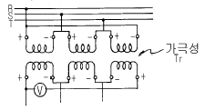
- 0
- 100
- 200
- 400
(정답률: 23%)
31. 연가해도 효과가 없는 것은?
- 선로정수의 평형
- 유도뢰의 방지
- 작용정전용량 감소
- 각 상의 임피던스 평형
(정답률: 34%)
32. 250㎜ 현수애자 10개를 직렬로 접속한 애자연의 건조섬락 전압이 590kV이고, 연효율(string efficiency)이 0.74 이다. 현수애자 한 개의 건조섬락전압은 약 몇 kV 인가?
- 80
- 90
- 100
- 120
(정답률: 20%)
33. 전력원선도에서 알 수 없는 것은?
- 선로 손실
- 송전선의 역률
- 코로나 손실
- 송수전 전력
(정답률: 22%)
34. 유입차단기에 대한 설명으로 옳지 않은 것은?
- 기름이 분해하여 발생되는 가스의 주성분은 수소가스이다.
- 붓싱 변류기를 사용할 수 없다.
- 기름이 분해하여 발생된 가스는 냉각작용을 한다.
- 보통 상태의 공기 중에서보다 소호능력이 크다.
(정답률: 29%)
35. 터빈발전기에서 수소냉각방식을 공기냉각방식과 비교한 것 중 수소냉각방식의 특징이 아닌 것은?
- 동일 기계에서 출력을 증가할 수 있다.
- 풍손이 적다.
- 권선의 수명이 길어진다.
- 코로나 발생이 심하다.
(정답률: 31%)
36. 3상 변압기의 %임피던스는? (단, 임피던스는 Z[Ω], 선간전압은 V[kV], 변압기의 용량은 P[kW]이다.)
- PZ/V
- PZ/10V
- PZ/10V2
- 10PZ/V2
(정답률: 34%)
37. 송전선로의 4단자 정수를 A , B , C , D 라 하면 다음 중 옳은 것은?
- AC-BD=1
- AB-CD=1
- ABCD=1
- AD-BC=1
(정답률: 54%)
38. 취수구에 제수문을 설치하는 목적은?
- 낙차를 높인다.
- 홍수위를 낮춘다.
- 유량을 조절한다.
- 모래를 배제한다.
(정답률: 39%)
39. 원자로의 보이드(void)계수란?
- 연료의 온도가 1도 변화할 때의 반응도 변화
- 노심내의 증기량이 1% 변화할 때의 반응도 변화
- 냉각재의 온도가 1도 변화할 때의 반응도 변화
- 연료 중의 독물질의 독작용을 나타내는 값
(정답률: 23%)
40. 복도체 선로에서 소도체의 지름이 8mm이고, 소도체사이의 간격이 40cm일 때 등가 반지름은 몇 cm 인가?
- 2.8
- 3.6
- 4.0
- 5.7
(정답률: 35%)
3과목: 전기기기
41. 동기발전기에서 제 5고조파를 제거하기 위해서는 (β =코일피치/극피치)가 얼마되는 단절권으로 해야 하는가?
- 0.9
- 0.8
- 0.7
- 0.6
(정답률: 23%)
42. 브흐홀쯔 계전기로 보호되는 기기는?
- 변압기
- 발전기
- 유도전동기
- 회전변류기
(정답률: 40%)
43. 다음중 변압기의 극성시험법이 아닌 것은?
- 직류전압계법
- 교류전압계법
- 표준변압기법
- 스코트법
(정답률: 29%)
44. 누설 변압기에 필요한 특성은 무엇인가?
- 정전압특성
- 고저항특성
- 고임피던스특성
- 수하특성
(정답률: 40%)
45. 3상 유도전동기의 전원주파수를 변화하여 속도를 제어하는 경우 전동기의 출력 P와 주파수 f 와의 관계는?
- P∝f
- P∝1/f
- P∝f2
- P는 f에 무관
(정답률: 41%)
46. 정격 전압에서 전 부하로 운전할때 50[A]의 부하 전류가 흐르는 직류 직권전동기가 있다. 지금 이 전동기의 부하 토크만이 1/2로 감소하면 그 부하전류는? (단.자기포화는 무시)
- 25[A]
- 35[A]
- 45[A]
- 50[A]
(정답률: 30%)
47. 200[V], 7.5[KW], 6극, 3상 유도전동기가 있다. 정격전압으로 기동할때는 기동전류는 정격전류의 615[%], 기동토크는 전부하 토오크의 225[%]이다. 지금 기동토크를 전부하 토크의 1.5배로 하려면 기동전압은?
- 약 163[V]
- 약 182[V]
- 약 193[V]
- 약 202[V]
(정답률: 20%)
48. 60[Hz], 4[극], 정격속도 1720[rpm]의 권선형 3상 유도 전동기가 있다. 전부하 운전중에 2차 회로의 저항을 4배로 하면 속도[rpm]는?
- 약 962
- 약 1215
- 약 1483
- 약 1656
(정답률: 13%)
49. 전압비가 무부하에서는 15:1, 정격부하에서는 15.5:1인 변압기의 전압변동율 [%]은?
- 2.2
- 2.6
- 3.3
- 3.5
(정답률: 30%)
50. 변압기의 철손이 Pi, 전부하동손이 Pc 일때 정격출력의 1/m 의 부하를 걸었을때 전손실은 어떻게 되는가?
- (Pi+Pc)(1/m)2
- Pi+Pc(1/m)
- Pi+(1/m)2Pc
- Pi(1/m)+Pc
(정답률: 31%)
51. 220[V], 3상, 4극, 60[Hz]인 3상 유도 전동기가 정격 전압 주파수에서 최대 회전력을 내는 슬립은 18[%]이다. 지금 200[V], 50[Hz]로 사용할 때의 최대 회전력 발생 슬립은 몇 [%] 인가?
- 17.7
- 19.7
- 20.7
- 21.7
(정답률: 11%)
52. 직류 전동기의 속도제어 방식중 직병렬 제어법을 사용할 수 있는 전동기는?
- 직류 타여자 전동기
- 직류 분권 전동기
- 직류 직권 전동기
- 직류 복권 전동기
(정답률: 12%)
53. 다음중 정전압형 발전기가 아닌것은?
- Rosenberg Generator
- Third Brush Generator
- Bergmann Generator
- Rototrol
(정답률: 20%)
54. 발전기의 단락비나 동기 임피던스를 산출하는데 필요한 시험은?
- 단상 단락시험과 3상 단락시험
- 무부하 포화시험과 3상 단락시험
- 정상,영상,리액턴스의 측정시험
- 돌발 단락시험과 부하시험
(정답률: 30%)
55. 직류발전기의 병렬운전 조건 중 잘못된 것은?
- 단자전압이 같을 것
- 외부특성이 같을 것
- 극성을 같게 할 것
- 유도기전력이 같을 것
(정답률: 15%)
56. 2방향성 3단자 사이리스터는?
- SCR
- SSS
- SCS
- TRIAC
(정답률: 28%)
57. 교류를 직류로 변환하는 전기기기가 아닌 것은?
- 전동발전기
- 회전변류기
- 단극발전기
- 수은정류기
(정답률: 24%)
58. 2개의 SCR로 단상전파정류를 하여 √2×100[V]의 직류 전압을 얻는데 필요한 1차측 교류 전압[V]은?
- 약 111
- 약 141
- 약 157
- 약 314
(정답률: 20%)
59. 동기전동기에 관한 설명에서 잘못된 것은?
- 기동권선이 필요하다.
- 난조가 발생하기 쉽다.
- 여자기가 필요하다.
- 역률을 조정할 수 없다.
(정답률: 36%)
60. 3상 교류 발전기의 기전력에 대하여 90° 늦은 전류가 흐를 때의 반작용 기자력(起磁力)은?
- 자극축(磁極軸)보다 90° 늦은 감자 작용
- 자극축보다 90° 빠른 증자 작용
- 자극축과 일치하는 감자(減磁) 작용
- 자극축과 일치하는 증자(增磁) 작용
(정답률: 16%)
4과목: 회로이론
61. 그림과 같은 회로에서 인가 전압에 의한 전류 i 에 대한출력 V0 의 전달 함수는?
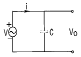
- 1/ Cs
- Cs
- 1/1+Cs
- 1+Cs
(정답률: 28%)
62. 그림과 같은 펄스의 라플라스 변환은 어느 것인가?
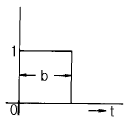
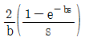
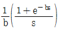
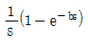
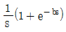
(정답률: 28%)
63. L-C직렬회로의 공진 조건은?
- 1/ωL=ωC+R
- 직류전원을 가할때
- ω L=ω C
- ω L=1/ωC
(정답률: 30%)
64. 정현파 교류의 실효값을 구하는 식이 잘못된 것은?
- 실효치=
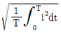
- 실효치=파고율× 평균치
- 실효치=최대치/√2
- 실효치=/2√2× 평균치
(정답률: 34%)
65. 그림과 같은 회로의 영상전달 정수 θ 를 cosh-1로 표시하면?
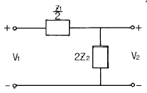
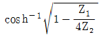
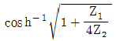
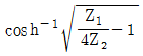
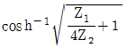
(정답률: 22%)
66. 정전용량계 C에 관한 설명으로 잘못된 것은?
- C의 단위에는 F,μF, pF 등이 사용된다.
- 정전용량의 역(逆)을 엘라스턴스(elastance)라고 한다.
- 엘라스턴스의 단위에는 Daraf가 사용된다.
- 정전용량계 C의 단자전압은 순간적으로 변화시킬 수 있다.
(정답률: 30%)
67. 저항 30[Ω], 용량성 리액턴스 40[Ω]의 병렬회로에 120[V]의 정현파 교번전압을 가할 때 전전류 [A]는?
- 3
- 4
- 5
- 6
(정답률: 24%)
68. 실효치가 12V인 정현파에 대하여 도면과 같은 회로에서 전 전류 I는?
- 3 - j 4[A]
- 4 + j 3[A]
- 4 - j 3[A]
- 6 + j 10[A]
(정답률: 17%)
69. 대칭 3상 교류 발전기의 기본식 중 알맞게 표현된 것은? (단, V0는 영상분 전압, V1은 정상분 전압, V2은 역상분전압이다.)
- V0=E0-Z0I0
- V1=-Z1I1
- V2=Z2I2
- V1=Ea-Z1I1
(정답률: 12%)
70. 그림과 같은 불평형 Y형 회로에 평형 3상 전압을 가할 경우 중성점의 전위는? (단, Y1, Y2, Y3는 각상의 어드미턴스이다)
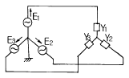
- E1+E2+E3/Z1+Z2+Z3
- Z1E1+Z2E2+Z3E3/Z1+Z2+Z3
- E1+E2+E3/Y1+Y2+Y3
- Y1E1+Y2E2+Y3E3/Y1+Y2+Y3
(정답률: 32%)
71. 그림과 같은 회로에서 i1 = Im sin ωt일때, 개방된 2차 단자에 나타나는 유기기전력 e2는 몇[V] 인가?
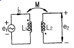
- ω MIm sin(ωt-90°)[V]
- ω MIm cos(ωt-90°)[V]
- -ω MIm cosωt [V]
- -ω MIm sinωt [V]
(정답률: 29%)
72. 무손실 분포정수 선로에서 인덕턴스가 1[μH/m]이고, 정전용량이 400[pF/m]일 때,특성 임피던스는 몇[Ω ]인가?
- 25[Ω ]
- 30[Ω ]
- 40[Ω ]
- 50[Ω ]
(정답률: 33%)
73. 그림과 같은 4단자망에서 4단자 정수의 행렬은?
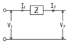
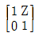
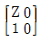
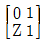
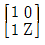
(정답률: 24%)
74. 그림과 같은 회로에서 전달함수
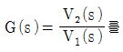
를 구하면? (단,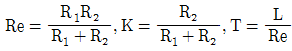
)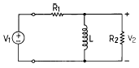
- Ts/K+Ts
- KTs/1+Ts
- Ts/1+Ts
- KTs/K+Ts
(정답률: 23%)
75. 2개의 교류 전압 v1=100 sin(377t+π/6)[v]와 v2=100√2 sin(377t+π/3)[v]가 있다. 옳게 표시된 것은?
- v1과 v2의 주기는 모두 1/60[sec]이다.
- v1과 v2의 주파수는 377[Hz]이다.
- v1과 v2는 동상이다.
- v1과 v2의 실효값은 100[V], 100√2 [V]이다
(정답률: 30%)
76. 3상 불평형 전압을 Va,Vb,Vc라고 할 때, 정상전압V1은?
- 1/3(Va+aVb+a2Vc)
- 1/3(Va+a2Vb+aVc)
- 1/3(Va+a2Vb+Vc)
- 1/3(Va+Vb+Vc)
(정답률: 44%)
77. 기본파의 20[%]인 제3고조파와 30[%]인 제5고조파를 포함한 전류의 왜형율은?
- 0.5
- 0.36
- 0.33
- 0.26
(정답률: 32%)
78. 부동작 시간(dead time) 요소의 전달함수는?
- K
- K/s
- Ke-Ls
- Ks
(정답률: 50%)
79. 그림에서 저항 2.6[Ω ]에 흐르는 전류는 몇[A]인가?
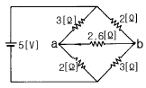
- 0.2
- 0.4
- 0.6
- 1.0
(정답률: 10%)
80. 과도 현상은 회로의 시정수와 관계하는데 이를 바르게 설명한 것은?
- 시정수가 클수록 과도현상은 빨라진다.
- 시정수는 과도현상의 자속시간과는 무관하다.
- 시정수의 역이 클수록 과도현상은 서서히 없어진다.
- 회로의 시정수가 클수록 과도현상은 오래계속된다.
(정답률: 28%)
5과목: 전기설비
81. 저압 가공전선과 굴뚝 등의 금속제 부분이 굴뚝 등의 도괴에 의하여 접촉할 우려가 있을 경우에는 전선으로 케이블을 사용하여야 한다. 그러나 굴뚝 등에 제 몇 종 접지공사를 시행하면 그러하지 않아도 되는가?
- 제1종 접지공사
- 제2종 접지공사
- 제3종 접지공사
- 특별 제3종 접지공사
(정답률: 29%)
82. 저압 또는 고압 가공 전선로의 지지물을 인가가 많이 연접된 장소에 시설할 때 빙설, 고온 및 저온계절을 구분하지 않고 적용할 수 있는 풍압하중은?
- 갑종풍압하중의 30%
- 병종풍압하중
- 을종풍압하중
- 을종풍압하중의 50%
(정답률: 34%)
83. 사용전압 66kV 가공전선과 6kV 가공전선을 동일 지지물에 병가하는 경우, 특별고압 가공전선은 케이블인 경우를 제외하고는 단면적이 몇 mm2인 경동연선 또는 이와 동등이 상의 세기 및 굵기의 연선이어야 하는가?
- 22
- 38
- 55
- 100
(정답률: 44%)
84. 피뢰기를 시설하지 않아도 되는 곳은?
- 가공 전선로와 지중 전선로가 접속되는 곳으로서 피보호 기기가 보호범위내에 위치하는 경우
- 발전소, 변전소 또는 이에 준하는 장소의 가공전선 인입구
- 특별고압 가공 전선로로부터 공급받는 수용장소의 인입구
- 특별고압 배전용 변압기의 특별고압측 및 고압측
(정답률: 34%)
85. 교통신호등회로의 사용전압은 몇 V 이하인가?
- 100
- 300
- 380
- 600
(정답률: 42%)
86. 백열전등 또는 방전등에 전기를 공급하는 옥내 전로의 대지전압은 몇 V 이하를 원칙으로 하는가?
- 300
- 380
- 440
- 600
(정답률: 41%)
87. 특별고압 가공 전선로의 유도전류는 사용전압이 60000V 이하인 경우에는 전화선로의 길이 12km마다 몇 ㎂를 넘지 않도록 시설해야 하는가?
- 1.5
- 2
- 2.5
- 3
(정답률: 38%)
88. 수용장소의 인입구 부근에 금속제 수도관로가 있는 경우 또는 대지간의 전기저항치가 몇 牆 이하인 값을 유지하는 건물의 철골이 있는 경우에 이것을 접지극으로 사용하여 저압 전선로의 접지측 전선에 추가 접지할 수 있는가?
- 1
- 2
- 3
- 10
(정답률: 27%)
89. 라이팅 덕트공사에 의한 저압 옥내배선에서 덕트의 지지 점간의 거리는 몇 m 이하로 하여야 하는가?
- 2
- 3
- 4
- 5
(정답률: 28%)
90. 저압 옥내간선에서 분기하여 전기사용기계기구에 이르는 저압 옥내전로로서 정격전류 30A인 과전류차단기로 보호 되는 저압 옥내배선용 MＩ케이블의 굵기는 최소 몇 mm2 이상이어야 하는가?
- 1.0
- 1.5
- 2.5
- 6
(정답률: 20%)
91. 전기 울타리의 시설에 관한 규정 중 옳지 않은 것은?
- 전기 울타리는 사람이 쉽게 출입하지 아니하는 곳에 시설하여야 한다.
- 전선은 지름 2mm의 경동선 또는 이와 동등 이상의 세기 및 굵기이어야 한다.
- 전기 울타리용 전원장치에 전기를 공급하는 전로의 사용전압은 400V 미만이어야 한다.
- 전선과 수목사이의 이격거리는 50cm 이상이어야 한다.
(정답률: 22%)
92. 사용전압이 22900V인 개폐소의 울타리, 담 등과 특별고압의 충전부분이 접근하는 경우에, 울타리, 담 등의 높이와 울타리, 담 등으로부터 충전부분까지의 거리의 합계는 몇 m 이상으로 하여야 하는가?
- 5
- 5.5
- 6
- 6.5
(정답률: 19%)
93. 수상 전선로를 시설하는 경우 알맞은 것은?
- 사용전압이 고압인 경우에는 3종 캡타이어 케이블을 사용한다.
- 가공 전선로의 전선과 접속하는 경우, 접속점이 육상에 있는 경우에는 지표상 4m 이상의 높이로 지지물에 견고하고 붙인다.
- 가공 전선로의 전선과 접속하는 경우, 접속점이 수면상에 있는 경우 사용전압이 고압인 경우에는 수면상 5m 이상의 높이로 지지물에 견고하게 붙인다.
- 고압 수상 전선로에 지기가 생길 때를 대비하여 전로를 수동으로 차단하는 장치를 시설한다.
(정답률: 38%)
94. 통신선과 특별고압 가공전선사이의 이격거리는 몇 m 이상이어야 하는가? (단, 특별고압 가공전선로의 다중접지를 한 중성선을 제외한다.)
- 0.8
- 1
- 1.2
- 1.4
(정답률: 23%)
95. 합성수지관공사에서 관 상호간 및 박스와는 관을 삽입하는 깊이를 관의 바깥지름의 몇 배 이상으로 하고 또한 꽂음접속에 의하여 견고하게 접속하여야 하는가? (단, 접착제를 사용하지 않은 경우임)
- 1.2
- 1.5
- 1.8
- 2
(정답률: 48%)
96. 고압 옥내배선을 건조한 장소로서 전개된 장소에 한하여만 시설할 수 있는 배선공사는?
- 케이블공사
- 금속관공사
- 합성수지관공사
- 애자사용공사
(정답률: 24%)
97. 가공 전선로의 지지물에 취급자가 오르고 내리는데 사용하는 발판못 등은 지표상 몇 m 미만에 시설하여서는 아니 되는가?
- 1.2
- 1.8
- 2.2
- 2.5
(정답률: 34%)
98. 도로에 시설하는 가공 직류 전차선로의 경간은 몇 m 이하로 하여야 하는가?
- 30
- 40
- 50
- 60
(정답률: 29%)
99. 가공 전선로의 지지물에 시설하는 지선에 관한 사항으로 옳은 것은?
- 지선의 안전률은 1.2 이상일 것
- 지선에 연선을 사용할 경우에는 소선은 3가닥 이상의 연선일 것
- 소선은 지름 1.2mm 이상인 금속선을 사용한 것일 것
- 허용 인장하중의 최저는 220kg으로 할 것
(정답률: 38%)
100. 고압 가공인입선이 케이블 이외의 것으로서 그 아래에 위험표시를 하였다면 전선의 지표상 높이는 몇 m 까지로 감할 수 있는가?
- 2.5
- 3.5
- 4.5
- 5.5
(정답률: 24%)